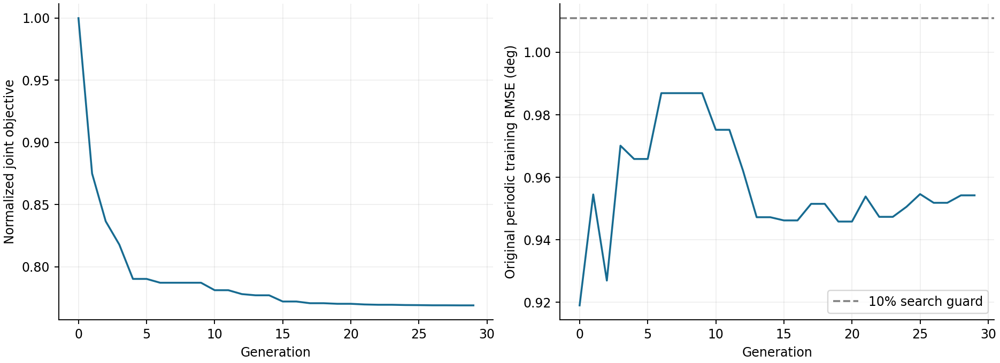
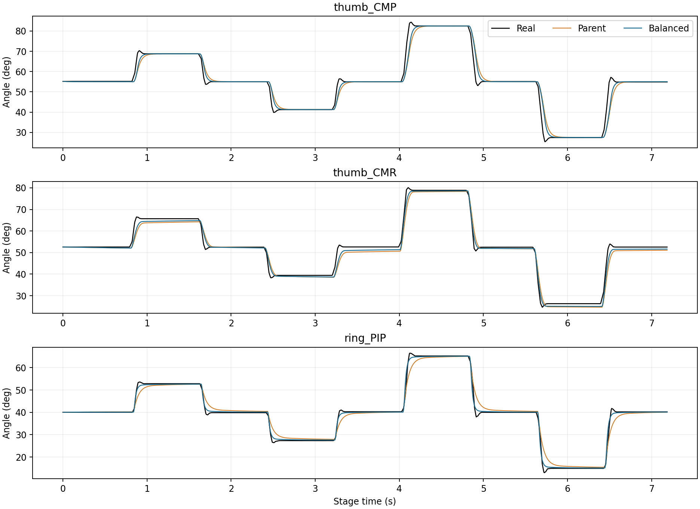
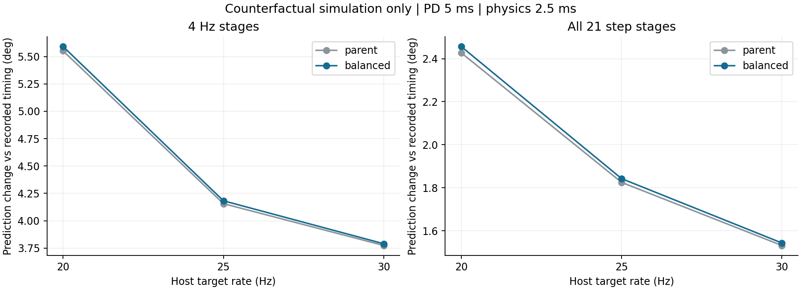

打包日期：2026-11-02（Asia/Shanghai）。完整步骤见同目录 README_使用说明.txt。fit_03 是保留基线；balanced 是最新七参数候选，尚未替代基线。以下为等效模型参数，不是硬件寄存器设置。
原始 JSON 保留完整精度；本页只显示 8 位有效数字。参数向量必须按关节名称映射。
| joint | armature_kg_m2 kg·m² | viscous_Nm_s_rad N·m·s/rad | friction_Nm N·m | encoder_bias_rad rad | effective_kp_Nm_rad N·m/rad | effective_kd_Nm_s_rad N·m·s/rad | effective_effort_limit_Nm N·m |
|---|---|---|---|---|---|---|---|
| right_thumb_CMP_joint | 0.0053199656 | 0.082543906 | 0.0044233595 | 0.017453293 | 7.15055 | 0.3385649 | 0.59264033 |
| right_thumb_CMR_joint | 0.0010050408 | 0.0076283993 | 0.023897053 | 0 | 0.78546835 | 0.033123316 | 0.6 |
| right_thumb_MCP_joint | 0.0014547323 | 0.016924211 | 0.021492741 | 0 | 7.2222249 | 0.19263881 | 0.84617663 |
| right_thumb_PIP_joint | 0.0015368989 | 0 | 0.023695407 | 0 | 5.7582971 | 0.21563888 | 0.84119472 |
| right_thumb_DIP_joint | 0.0013888095 | 0 | 0.020752118 | 0 | 5.2352479 | 0.17023498 | 0.81869262 |
| right_index_MPR_joint | 0.0023993286 | 0.015482554 | 0.025739186 | 0 | 21.420226 | 0.27741666 | 1.321882 |
| right_index_MCP_joint | 0.0008957118 | 0 | 0 | 0 | 5.443569 | 0.11729493 | 0.36425011 |
| right_index_PIP_joint | 0.0015944263 | 0 | 0.0089562365 | 0 | 6.9485828 | 0.14693679 | 0.59771374 |
| right_index_DIP_joint | 0.0013798819 | 0.0046377779 | 0.012010803 | 0 | 6.87531 | 0.11001581 | 0.94410862 |
| right_middle_MPR_joint | 0.00081453269 | 0.0066483291 | 0.033580885 | 0 | 5.2715396 | 0.078762282 | 0.6 |
| right_middle_MCP_joint | 0.0010978675 | 0.022392191 | 0.014109328 | 0 | 11.655541 | 0.17039169 | 0.84984992 |
| right_middle_PIP_joint | 0.0014402069 | 0.016015555 | 0 | 0 | 7.7898858 | 0.13904655 | 0.8388462 |
| right_middle_DIP_joint | 0.001310031 | 0.029293106 | 0.0083142129 | 0 | 9.336455 | 0.16146233 | 0.96970455 |
| right_ring_MPR_joint | 0.00066819675 | 0.023551726 | 0 | 0 | 6.3542436 | 0.15253036 | 0.6 |
| right_ring_MCP_joint | 0.0014345737 | 0.0067367217 | 0 | 0 | 6.9874351 | 0.20241035 | 0.83104834 |
| right_ring_PIP_joint | 0.00074992556 | 0.0061521038 | 0.02265057 | 0 | 2.2904806 | 0.13365687 | 0.6 |
| right_ring_DIP_joint | 0.0017888116 | 0 | 0.0038798 | 0 | 9.4912419 | 0.29260469 | 1.3502775 |
| right_little_MPR_joint | 0.00091502773 | 0.017684983 | 0 | 0 | 6.0922932 | 0.12244753 | 0.6 |
| right_little_MCP_joint | 0.0016106388 | 0.023640984 | 0.028608112 | 0 | 10.584414 | 0.11214544 | 0.79462384 |
| right_little_PIP_joint | 0.0011311238 | 0.018974883 | 0 | 0 | 10.224818 | 0.16996705 | 0.95457116 |
| right_little_DIP_joint | 0.0007046811 | 0.022300905 | 0.02010342 | 0 | 5.895574 | 0.11471204 | 0.92897224 |
delay_s = 0.012983980784281389；在 5 ms 网格上取 3 步，即 15 ms。finger_body_inertia_scale = 1.0；未包含 finger_body_mass_scale，后端默认 1.0，质量保持资产值。
| joint | armature_kg_m2 kg·m² | viscous_Nm_s_rad N·m·s/rad | friction_Nm N·m | encoder_bias_rad rad | effective_kp_Nm_rad N·m/rad | effective_kd_Nm_s_rad N·m·s/rad | effective_effort_limit_Nm N·m |
|---|---|---|---|---|---|---|---|
| right_thumb_CMP_joint | 0.0043636395 | 0.082543906 | 0.0044233595 | 0.017453293 | 23.543235 | 0.698884 | 0.59264033 |
| right_thumb_CMR_joint | 0.0010050408 | 0.0076283993 | 0.023897053 | 0 | 1.1039298 | 0.042304326 | 0.6 |
| right_thumb_MCP_joint | 0.0014547323 | 0.016924211 | 0.021492741 | 0 | 7.2222249 | 0.19263881 | 0.84617663 |
| right_thumb_PIP_joint | 0.0015368989 | 0 | 0.023695407 | 0 | 5.7582971 | 0.21563888 | 0.84119472 |
| right_thumb_DIP_joint | 0.0013888095 | 0 | 0.020752118 | 0 | 5.2352479 | 0.17023498 | 0.81869262 |
| right_index_MPR_joint | 0.0023993286 | 0.015482554 | 0.025739186 | 0 | 21.420226 | 0.27741666 | 1.321882 |
| right_index_MCP_joint | 0.0008957118 | 0 | 0 | 0 | 5.443569 | 0.11729493 | 0.36425011 |
| right_index_PIP_joint | 0.0015944263 | 0 | 0.0089562365 | 0 | 6.9485828 | 0.14693679 | 0.59771374 |
| right_index_DIP_joint | 0.0013798819 | 0.0046377779 | 0.012010803 | 0 | 6.87531 | 0.11001581 | 0.94410862 |
| right_middle_MPR_joint | 0.00081453269 | 0.0066483291 | 0.033580885 | 0 | 5.2715396 | 0.078762282 | 0.6 |
| right_middle_MCP_joint | 0.0010978675 | 0.022392191 | 0.014109328 | 0 | 11.655541 | 0.17039169 | 0.84984992 |
| right_middle_PIP_joint | 0.0014402069 | 0.016015555 | 0 | 0 | 7.7898858 | 0.13904655 | 0.8388462 |
| right_middle_DIP_joint | 0.001310031 | 0.029293106 | 0.0083142129 | 0 | 9.336455 | 0.16146233 | 0.96970455 |
| right_ring_MPR_joint | 0.00066819675 | 0.023551726 | 0 | 0 | 6.3542436 | 0.15253036 | 0.6 |
| right_ring_MCP_joint | 0.0014345737 | 0.0067367217 | 0 | 0 | 6.9874351 | 0.20241035 | 0.83104834 |
| right_ring_PIP_joint | 0.00074992556 | 0.0061521038 | 0.02265057 | 0 | 4.652494 | 0.12092744 | 0.6 |
| right_ring_DIP_joint | 0.0017888116 | 0 | 0.0038798 | 0 | 9.4912419 | 0.29260469 | 1.3502775 |
| right_little_MPR_joint | 0.00091502773 | 0.017684983 | 0 | 0 | 6.0922932 | 0.12244753 | 0.6 |
| right_little_MCP_joint | 0.0016106388 | 0.023640984 | 0.028608112 | 0 | 10.584414 | 0.11214544 | 0.79462384 |
| right_little_PIP_joint | 0.0011311238 | 0.018974883 | 0 | 0 | 10.224818 | 0.16996705 | 0.95457116 |
| right_little_DIP_joint | 0.0007046811 | 0.022300905 | 0.02010342 | 0 | 5.895574 | 0.11471204 | 0.92897224 |
delay_s = 0.012983980784281389；在 5 ms 网格上取 3 步，即 15 ms。finger_body_inertia_scale = 1.0；未包含 finger_body_mass_scale，后端默认 1.0，质量保持资产值。
| PACE | joint | SDK |
|---|---|---|
| 0 | right_thumb_CMP_joint | 19 |
| 1 | right_thumb_CMR_joint | 20 |
| 2 | right_thumb_MCP_joint | 16 |
| 3 | right_thumb_PIP_joint | 17 |
| 4 | right_thumb_DIP_joint | 18 |
| 5 | right_index_MPR_joint | 12 |
| 6 | right_index_MCP_joint | 13 |
| 7 | right_index_PIP_joint | 14 |
| 8 | right_index_DIP_joint | 15 |
| 9 | right_middle_MPR_joint | 8 |
| 10 | right_middle_MCP_joint | 9 |
| 11 | right_middle_PIP_joint | 10 |
| 12 | right_middle_DIP_joint | 11 |
| 13 | right_ring_MPR_joint | 4 |
| 14 | right_ring_MCP_joint | 5 |
| 15 | right_ring_PIP_joint | 6 |
| 16 | right_ring_DIP_joint | 7 |
| 17 | right_little_MPR_joint | 0 |
| 18 | right_little_MCP_joint | 1 |
| 19 | right_little_PIP_joint | 2 |
| 20 | right_little_DIP_joint | 3 |
七参数候选改善目标阶跃，但增加拇指 4 Hz 误差。频率对照仅为离线预测；不构成新频率真机测试。


